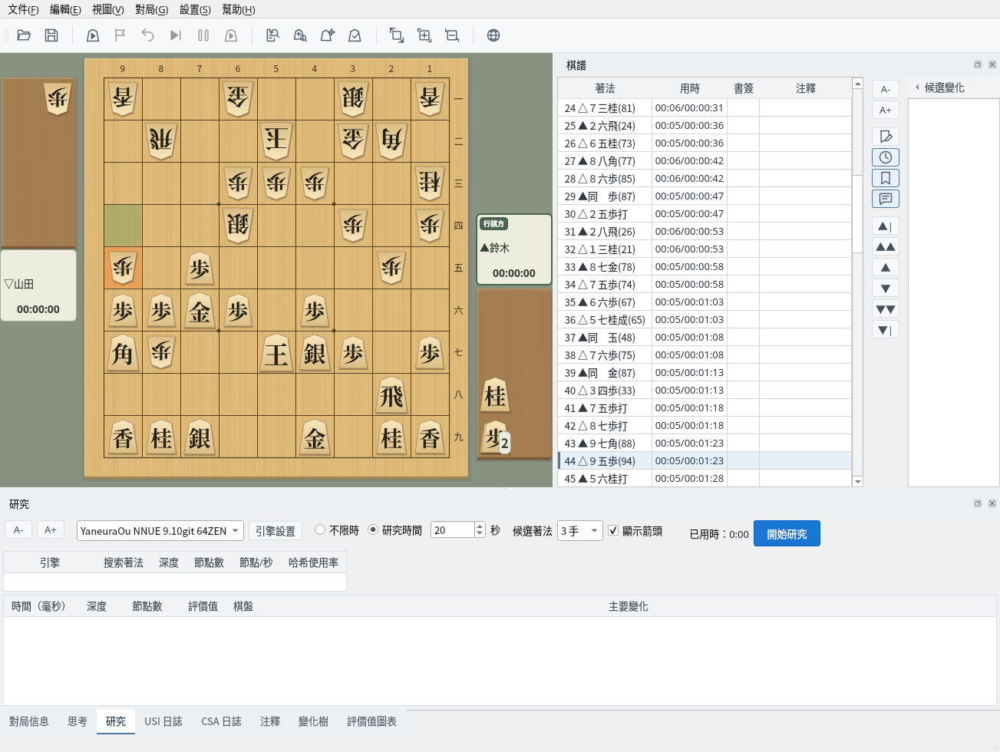
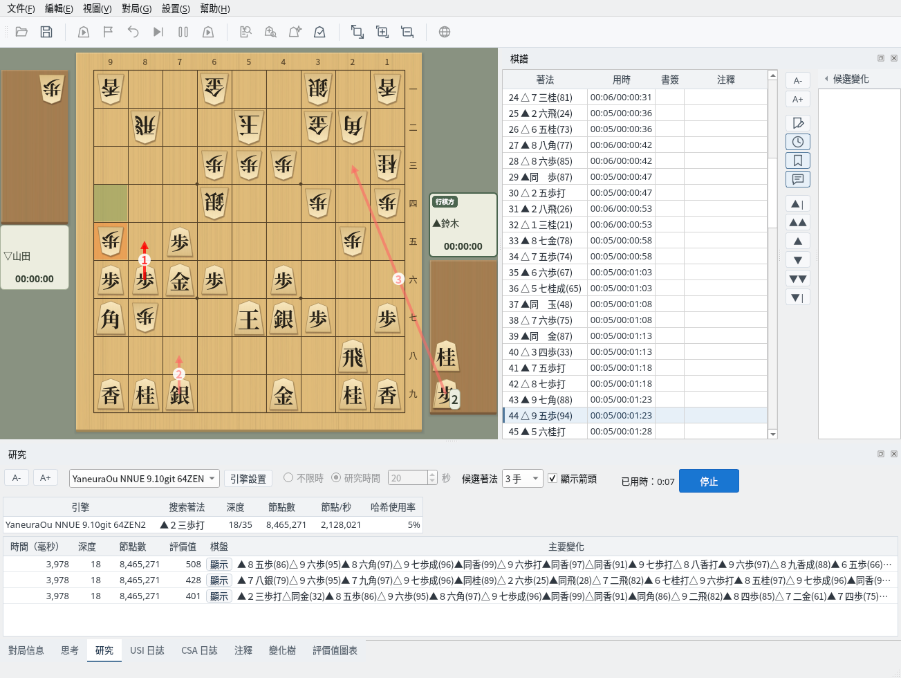
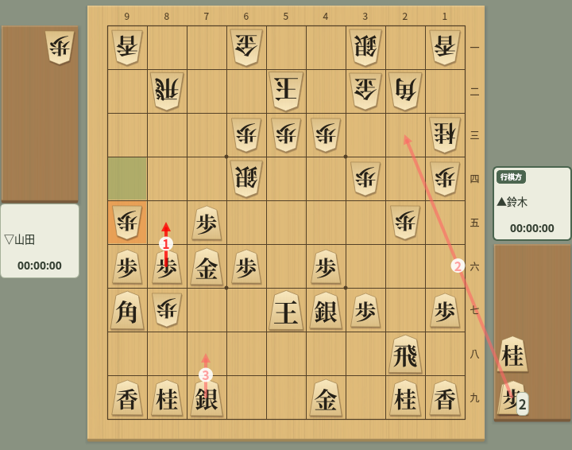
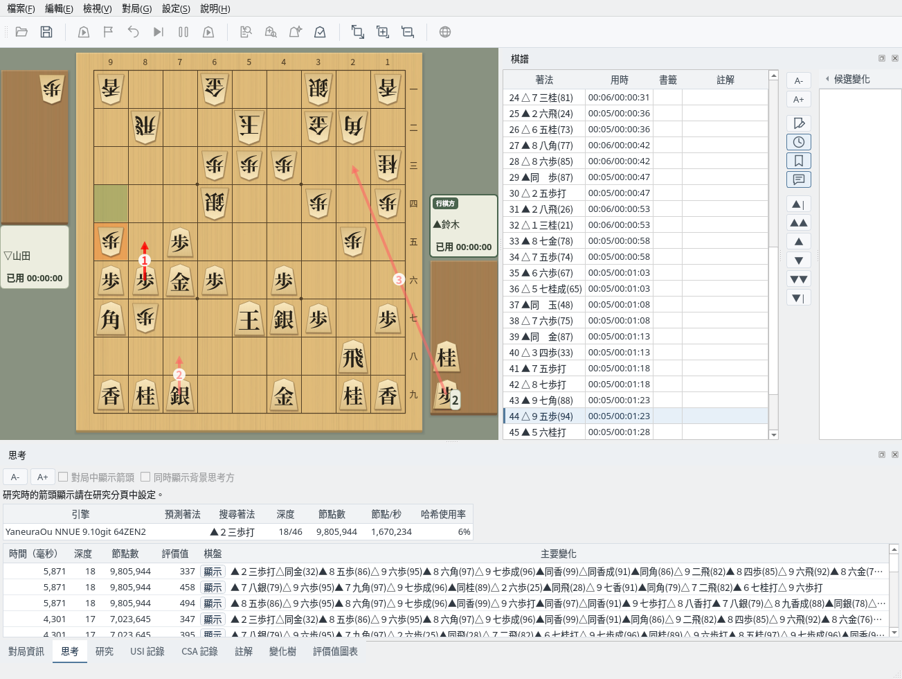
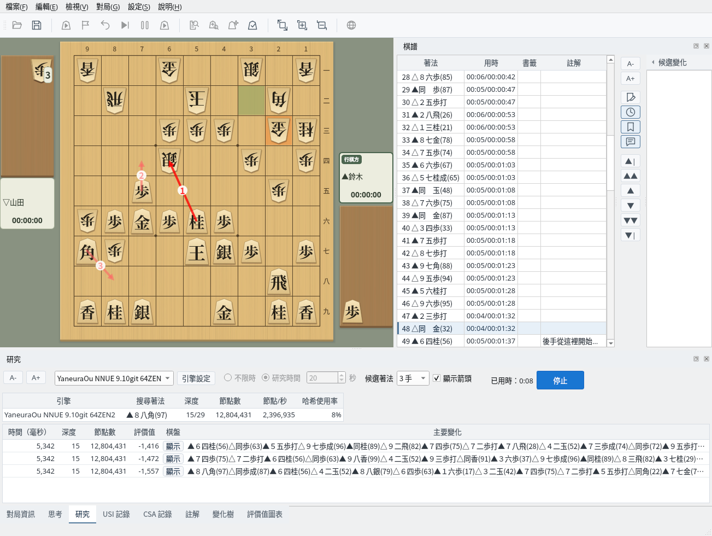

讓引擎研究任意局面的候選著法
截圖於 Linux 上以繁體中文介面擷取。
在「研究」分頁中設定研究條件
「研究」分頁可以設定以下項目。設定會被儲存，下次啟動時也會還原。
在棋譜欄中選擇要研究的局面，按一下「開始研究」，即開始研究棋盤上顯示的局面。研究時間的設定在研究中無法變更，如需變更，請先按一下「停止」結束研究。

「研究」分頁：設定引擎、研究時間、候選著法數量與箭頭顯示
即時查看引擎的候選著法與主要變化
開始研究後，上方顯示引擎的搜尋狀態（正在搜尋的著法、深度、節點數、節點/秒、哈希使用率），下方依評價值由高到低列出候選著法。每一列顯示評價值、深度、節點數與主要變化；按一下「棋盤」欄中的「顯示」，可以在棋盤上重播主要變化。
研究中也可以變更候選著法的數量與引擎，變更後會重新搜尋。到達研究時間後，搜尋停止，結果仍保留在畫面上；選擇其他局面或變更候選著法數量即可繼續研究。要結束研究，請按一下「停止」。

研究中：即時顯示候選著法、評價值與主要變化
棋盤上以附有名次編號的箭頭顯示候選著法。最佳著法為深紅色，第 2 名以後為淺紅色。打入持駒的著法，箭頭從駒台出發。可以用「顯示箭頭」核取方塊切換顯示或隱藏，停止研究後箭頭會消失。

候選著法箭頭：編號為名次，從駒台出發的箭頭是打入持駒步的著法
「思考」分頁依由新到舊的順序列出從引擎收到的思考資訊，可以看到主要變化如何隨搜尋加深而改變。研究時的箭頭顯示在「研究」分頁中設定，因此「思考」分頁中的「對局中顯示箭頭」與「同時顯示背景思考方」無法使用。

「思考」分頁：依由新到舊的順序顯示引擎的思考資訊
選擇棋譜中的其他局面繼續研究
研究中按一下棋譜欄中的其他著法，或用導覽按鈕移動局面，就會在該局面重新開始研究，已用時也從 0 重新計算。可以接連研究感興趣的局面。

繼續研究：在棋譜欄中選擇其他著法後，會在該局面重新開始研究